Diese Onlinehilfe erklärt die Funktionsweise des Plug-ins Huffman-Kodierung.
Inhaltsübersicht:
1) Registerkarte Komprimierung/Dekomprimierung und Szenario-Auswahl
2) Registerkarte Huffman-Baum
3) Registerkarte Code-Tabelle
4) Bedeutung der Icons in der Menüleiste
5) Quellen
Das Plug-in Huffman-Kodierung lässt sich über das Menü Visualisierungen oder über den Krypto-Explorer im Tab Visualisierungen starten.
Das Plug-in besteht aus drei Registerkarten: Komprimierung/Dekomprimierung, Huffman-Baum und Code-Tabelle.
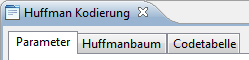
1) Auf der ersten Registerkarte Komprimierung/Dekomprimierung hat man zwei Szenarien, aus denen man wählen kann:
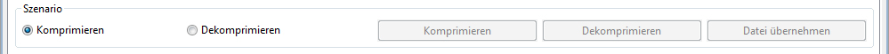
Szenario 1 -- Komprimieren
In diesem Szenario geht es um die Komprimierung von Text. Dabei hat man die Möglichkeit, den Text entweder
aus einer Datei zu laden oder ihn manuell in das Feld Eingabetext einzugeben.
a) Für das Laden einer Datei kann man folgendermaßen vorgehen: Per Klick auf den Button Unkomprimierte Datei öffnen... wird der Dateiauswahl-Dialog des Betriebssystems geöffnet und nach Textdateien (ISO-8859-1) gefiltert. ISO-8859-1 ist ein Standard zur Zeichenkodierung mit acht Bit.
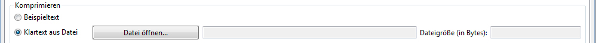
Nachdem man die Datei ausgewählt hat, wird der Inhalt der Datei in das Feld Eingabetext geladen und der Button Komprimieren wird aktiviert. Die Dateigröße wird ermittelt und neben dem Text Dateigröße (in Bytes) angezeigt. Dadurch kann man die Dateigrößen vor und nach der Komprimierung vergleichen.
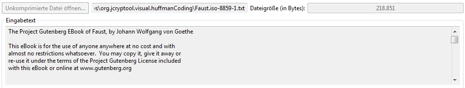
b) Für das manuelle Eingeben eines Textes kann man direkt im Feld Eingabetext einen gewünschten Freitext eingeben. Sobald der Freitext eingegeben wurde, wird der Button Unkomprimierte Datei öffnen... deaktiviert. Somit kann man zwischen manueller Texteingabe und Laden einer Datei wählen bzw. zum Initial-Zustand zurückkehren, indem man den zuvor manuell eingegeben Text wieder löscht. Dadurch wird der Button Unkomprimierte Datei öffnen... wieder aktiviert.
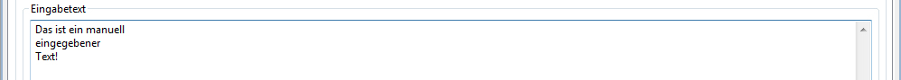
Durch Klick auf den Button Komprimieren  wird der Text im Feld
Eingabetext komprimiert. Nachdem die Komprimierung abgeschlossen ist, wird eine Meldung über die Komprimierung angezeigt.
wird der Text im Feld
Eingabetext komprimiert. Nachdem die Komprimierung abgeschlossen ist, wird eine Meldung über die Komprimierung angezeigt.
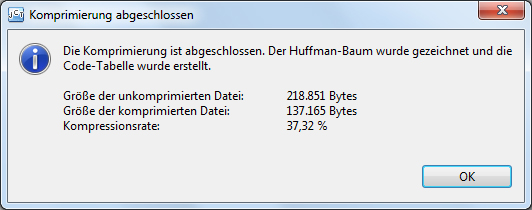
Eine Ausgabedatei mit der Dateierweiterung .huffman wird im Home-Verzeichnis des Benutzers erzeugt. Der Dateipfad und die Größe der Ausgabedatei werden angezeigt. Der Button Komprimieren wird deaktiviert und der Button Datei übernehmen aktiviert.
Nun kann man durch Klick auf den Button Datei übernehmen 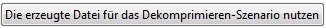 in das Szenario 2 Dekomprimieren wechseln und den zuvor komprimierten Text dekomprimieren.
Szenario 2 -- Dekomprimieren
In diesem Szenario kann man eine komprimierte Datei dekomprimieren. Dafür klickt man auf den Button
Komprimierte Datei öffnen..., um den Dateiauswahl-Dialog des Betriebssystems zu öffnen. Dabei wird nach
.huffman-Dateien gefiltert.
Nachdem eine .huffman-Datei ausgewählt wurde, wird die Dateigröße ermittelt und neben dem Text Dateigröße (in Bytes) angezeigt. Der Button Dekomprimieren ist aktiviert.
Durch Klick auf den Button Dekomprimieren wird die Datei dekomprimiert und sein Inhalt in dem Feld Ausgabetext angezeigt.
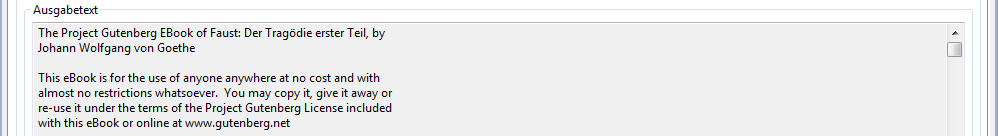
2) Je nachdem, ob eine Komprimierung bzw. Dekomprimierung durchgeführt wird, wird auf der zweiten Registerkarte (Huffman-Baum) die Baumstruktur dargestellt. Für den graphischen Aufbau des Huffman-Baums wurde das ZEST Framework verwendet. ZEST ist ein Eclipse-Toolkit mit einer Reihe von Visualisierungskomponenten. Mit ZEST ist es möglich, Graphen auf einfache Weise.
Der Huffman-Baum ist ein Binärbaum, der seine Informationen an seinen Blättern trägt. Die Blätter sind grün markiert und stellen die ASCII-Zeichen des Eingabetextes dar.
Auf den Kanten des Graphen werden die Bits 1 oder 0 dargestellt, die zusammen das Codewort für das jeweilige Zeichens ergeben.
Beim Wurzelknoten und bei den inneren Knoten des Baums, der durch Komprimierung erstellt wurde, werden die Wahrscheinlichkeiten der Zeichen dargestellt. Bei einem Baum, der durch Dekomprimieren erzeugt wurde, werden der Wurzelknoten bzw. die inneren Knoten als leere Knoten dargestellt, da in diesem Fall keine Wahrscheinlichkeiten berechnet werden.
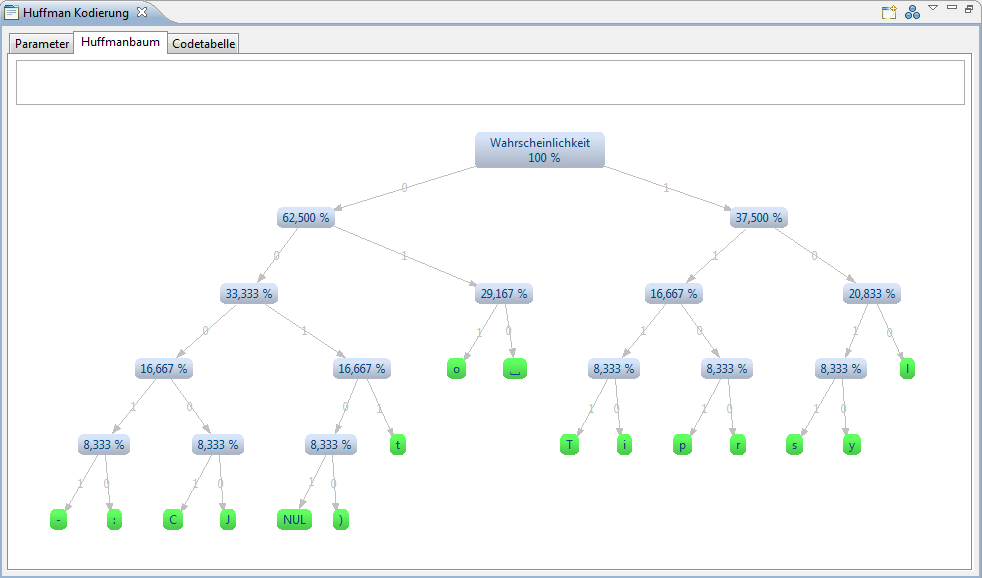
Wenn man mit der Maus über ein Blatt geht, wird als Tooltip das Codewort des Zeichens angezeigt.
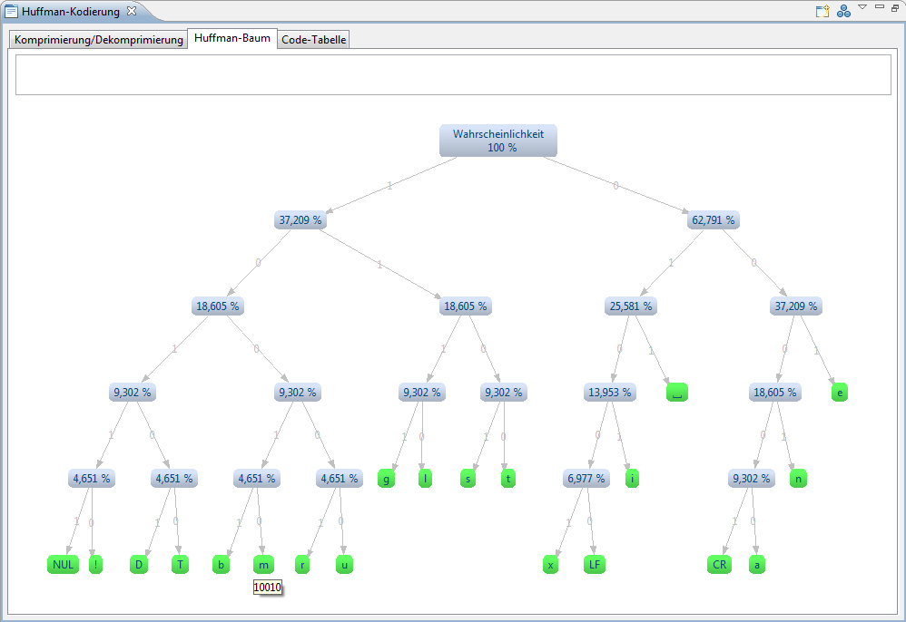
Beim Klick auf eines der Blätter wird der dazu gehörige Zweig selektiert: Der gesamte Zweig von der Wurzel bis zum angeklickten Blatt wird farblich hervorgehoben und man kann den Zweig bei Bedarf verschieben. Das Codewort des ausgewählten Blattes wird oben angezeigt.
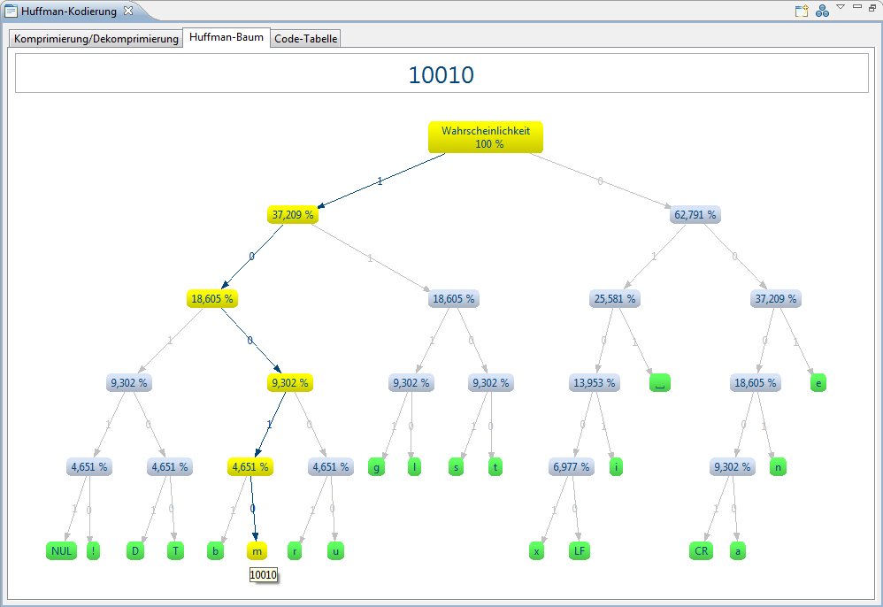
3) Auf der dritten Registerkarte wird die Code-Tabelle angezeigt. Dabei wird für jedes ASCII-Zeichen, das in dem Eingabetext vorkommt, das dazu gehörige Codewort angezeigt. Beim Klick auf den Button Zweig anzeigen, wechselt die Ansicht auf die Registerkarte Huffman-Baum und selektiert den dazu passenden Zweig.
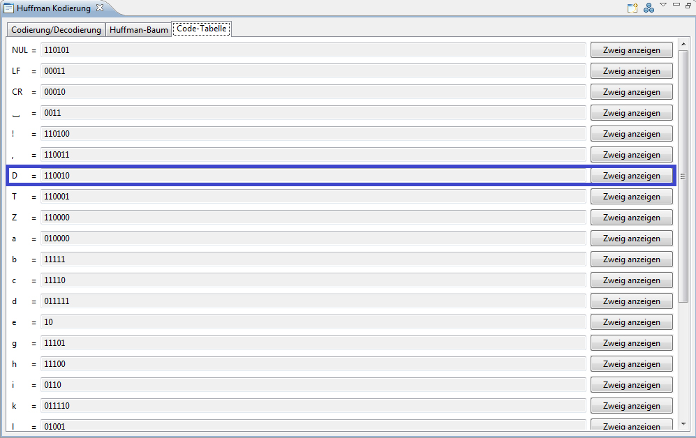
4) Bedeutung der Icons in der Menüleiste
 -Icon das Layout des Huffman-Baums dynamisch ändern.
Standardmäßig wird der Huffman-Baum im "Baum Layout" angezeigt. Zusätzlich sind das "Horizontal Baum Layout" und
das "Radial Layout" verfügbar. Unterschiedliche Darstellungsmöglichkeiten des Huffman-Baums sollen die Lesbarkeit des
Baums erleichtern.
-Icon das Layout des Huffman-Baums dynamisch ändern.
Standardmäßig wird der Huffman-Baum im "Baum Layout" angezeigt. Zusätzlich sind das "Horizontal Baum Layout" und
das "Radial Layout" verfügbar. Unterschiedliche Darstellungsmöglichkeiten des Huffman-Baums sollen die Lesbarkeit des
Baums erleichtern. -Icon skaliert werden.
-Icon skaliert werden.5) Quellen